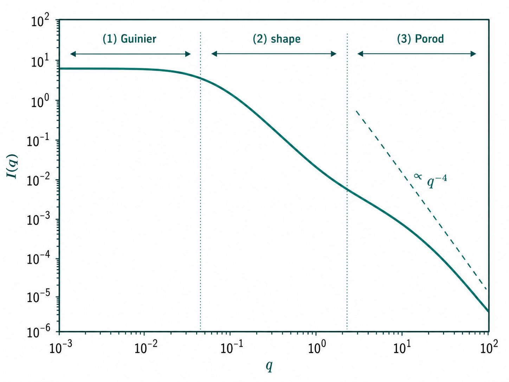
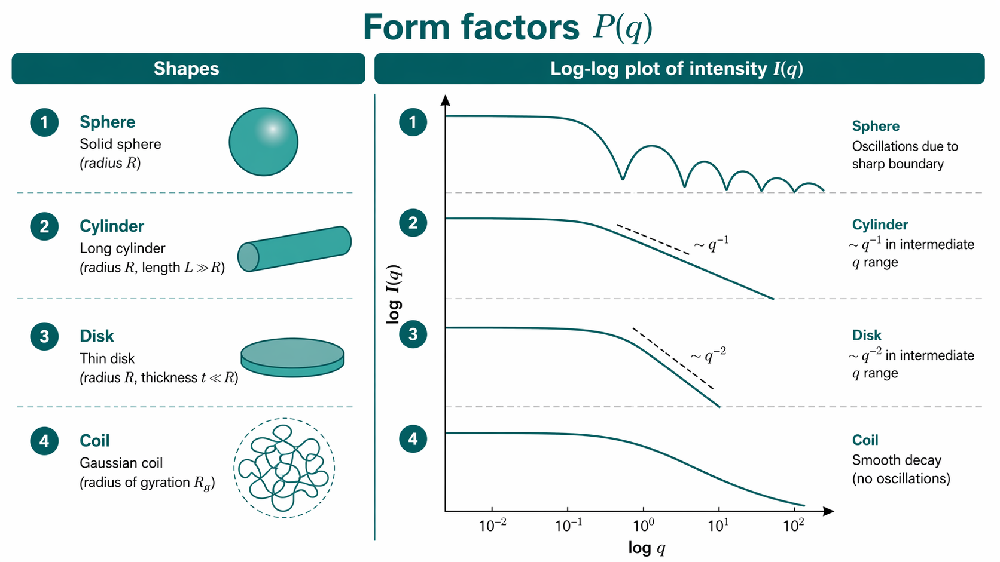
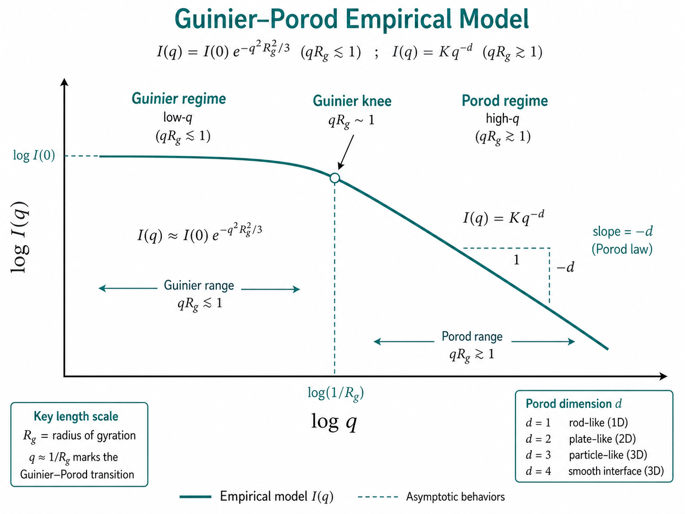

02 · 散射基础
Scattering fundamentals — q, contrast, P(q) and S(q)
导语：从一条 $I(q)$ 曲线读出什么
上一章建立了 SAS 的「全景」。本章进入核心语言：如何把实验测得的散射强度 $I(q)$ 与样品内部的密度起伏、几何形状和粒子间距联系起来。掌握本章后，你应能：
- 写出$q$ 的定义并估算所敏感的长度尺度；
- 解释散射长度密度与衬度 $\Delta\rho$ 如何决定信号强弱；
- 区分形式因子 $P(q)$ 与结构因子 $S(q)$ 的物理来源；
- 知道低 $q$ 的前向散射与Guinier 区、高 $q$ 的Porod 区各携带何种信息。
以下推导以弹性、相干、各向同性散射为主——这是稀溶液 SAS 的标准起点。取向样品、表面薄膜与磁性散射将在后续章节与专题中扩展。
式 (2.1) 的成立条件
Jeffries 2021 与 Boldon 等（2015）共同强调，$I(q)=n(\Delta\rho)^2 V^2 P(q)S(q)$ 要求：(1) 粒子可视为相同散射体（或已知多分散分布）；(2) 衬度 $\Delta\rho$ 在粒子体积内近似常数（排除强溶剂渗透梯度）；(3) 单次散射占主导（SANS 厚样须防多重散射）；(4) 探测器记录的是相干散射强度的时间/空间平均。违反任一条时，须引入额外项（如粒子间密度差、DWBA 表面项、仪器模糊卷积）。
散射矢量 $q$：倒易空间标尺
散射过程遵守动量守恒。定义散射矢量
$$ \mathbf{q} = \mathbf{k}_s - \mathbf{k}_i $$其中 $\mathbf{k}_i$、$\mathbf{k}_s$ 分别为入射与散射波矢，$|\mathbf{k}| = 2\pi/\lambda$。对弹性散射（$|\mathbf{k}_s| = |\mathbf{k}_i|$），在真空中
$$ q = |\mathbf{q}| = \frac{4\pi\sin\theta}{\lambda} $$
这里 $2\theta$ 为散射角。$q$ 的量纲为长度$^{-1}$，习惯用 Å$^{-1}$ 或 nm$^{-1}$（$1\,\text{nm}^{-1} = 0.1\,\text{Å}^{-1}$）。
尺度换算： 一阶对应关系为
$$ d \approx \frac{2\pi}{q} $$例如 $q = 0.1\,\text{Å}^{-1}$ 对应 $d \approx 63$ Å（6.3 nm）。更精确地说，$d$ 是傅里叶空间中周期，而非粒径；粒径参数 $R_g$、$D_{\max}$ 需通过特定分析（Guinier、$p(r)$ 等）获得。
单位换算算例： 文献给出 $q_{\max}=6.0$ nm$^{-1}$ → $0.60$ Å$^{-1}$。若 $R_g=35$ Å，则 Guinier 上限 $q \lesssim 1/R_g = 0.029$ Å$^{-1}$（$\approx 0.29$ nm$^{-1}$）。混用 nm$^{-1}$ 与 Å 是拟合软件报错的常见原因。
| $q$ (Å$^{-1}$) | $d=2\pi/q$ | 敏感对象（示意） |
|---|---|---|
| 0.001 | ≈ 6.3 μm | 大相分离域、USAXS |
| 0.01 | ≈ 630 nm | 大复合物、囊泡 |
| 0.1 | ≈ 63 nm | 蛋白质、小胶束 |
| 1.0 | ≈ 6.3 nm | 紧凑纳米颗粒 |
在二维探测器上，每个像素对应一组 $(q_x, q_y)$；各向同性样品的 $I(q)$ 由以束心为圆心的方位角平均得到。各向异性样品则须保留 $I(q,\varphi)$ 或在选定楔区积分——这是数据还原阶段的话题（第 04 章）。
由几何估算 $q_{\min}$、$q_{\max}$
透射针孔几何一阶估算（小角）：
$$ q_{\min} \approx \frac{4\pi}{\lambda}\,\frac{r_{\text{bs}}}{L}, \qquad q_{\max} \approx \frac{4\pi}{\lambda}\,\frac{R_{\text{det}}/2}{L} $$其中 $r_{\text{bs}}$ 为束阻半径，$L$ 为样品–探测器距离，$R_{\text{det}}$ 为探测器有效半径。算例：$\lambda=1.54$ Å，$L=4$ m，$r_{\text{bs}}=1.5$ mm → $q_{\min} \approx 0.003$ Å$^{-1}$（$d \sim 2$ μm）；$R_{\text{det}}=150$ mm → $q_{\max} \approx 0.3$ Å$^{-1}$。改变 $L$ 或波长是扩展 $q$ 窗口的物理手段，非后处理可补救。
| 参数 | 增大 → 对 $q$ 的影响 | 副作用 |
|---|---|---|
| $L$ | $q_{\min}$、$q_{\max}$ 同比例减小 | 通量 $\propto 1/L^2$；需更大探测器 |
| $\lambda$（更长） | 同角度下 $q$ 减小 | 吸收增强 |
| 束阻 $r_{\text{bs}}$ | 减小 → $q_{\min}$ 降低 | 寄生散射抬高前向区 |
散射长度密度与衬度
样品内每一点具有散射长度密度 $\rho(\mathbf{r})$：单位体积内所有相干散射中心（X 射线为电子，中子为核心）的散射长度之和。溶剂或基体贡献 $\rho_s$。背景扣除后，实验敏感的是过剩密度
$$ \Delta\rho(\mathbf{r}) = \rho(\mathbf{r}) - \rho_s $$其体积平均即为衬度
$$ \Delta\rho = \langle \Delta\rho(\mathbf{r}) \rangle_V $$当 $\Delta\rho = 0$（衬度匹配）时，相干散射几乎消失，只剩微弱的不均匀性信号。SANS 中通过 H/D 替换调节溶剂 $\rho_s$ 是常规操作；SAXS 中改变缓冲盐浓度或加入重原子也可微调电子密度，但自由度较低。
对均匀球体粒子（半径 $R$，内部 $\rho_p$，溶剂 $\rho_s$），衬度为 $\Delta\rho = \rho_p - \rho_s$。散射强度正比于 $\Delta\rho^2$——衬度减半，强度降为四分之一。设计实验时应用计算器（如 MULCh、NIST SLD 数据库）预估 $\Delta\rho$，避免「测了但看不见」。
体积分数与有效衬度： 两相混合物中，若粒子体积分数 $\phi$，稀极限下相干强度仍 $\propto \phi(\Delta\rho)^2$；浓体系须同时处理 $S(q)$ 与可能的界面散射。SAXS 中造影剂（碘、钽等）可局部抬高 $\rho_p$，但改变化学环境；SANS 中氘代标记可选择性抬高某一组分的 SLD，而不改其化学功能——这是生物 SANS 的核心优势。
数值例（SANS）： 蛋白质在 D$_2$O 中，$\rho_{\text{protein}} \approx 3.0\times 10^{10}$ cm$^{-2}$，$42\%$ D$_2$O 缓冲液 $\rho_s \approx 3.0\times 10^{10}$ cm$^{-2}$ → 匹配点，$\Delta\rho \approx 0$，SANS 信号极弱。改用 $8\%$ D$_2$O（$\rho_s \approx 1.0\times 10^{10}$ cm$^{-2}$）则 $\Delta\rho \approx 2.0\times 10^{10}$ cm$^{-2}$，信号恢复。SAXS 中无此「开关」，只能靠盐浓度微调。
| 材料 | SAXS $\rho_e$ (e/Å$^3$) | SANS SLD (×$10^{10}$ cm$^{-2}$) |
|---|---|---|
| 水 / H$_2$O | 0.33 | −0.56 |
| 蛋白质（平均） | 0.43 | +3.0 |
| DNA | 0.55 | +4.1 |
| PS 微球 | 0.34 | +1.4 |
| D$_2$O | 0.66 | +6.4 |
SAXS 常用电子密度单位 e/Å$^3$；SANS 用 cm$^{-2}$。两者符号体系不同，但物理角色相同：决定散射振幅的权重。
从傅里叶变换到 $I(q)$
相干散射强度是过剩密度傅里叶变换的模方。对体积 $V$ 内样品，
$$ I(q) \propto \frac{1}{V}\left|\int_V \Delta\rho(\mathbf{r})\, e^{i\mathbf{q}\cdot\mathbf{r}}\, d\mathbf{r}\right|^2 $$相位信息在探测中丢失，只余强度。对单分散、稀释、各向同性的相同粒子体系，上式化为
$$ I(q) = n\,(\Delta\rho)^2 V^2 P(q)\, S(q) \quad \text{(式 2.1)} $$各项含义：
- $n$：粒子数密度；
- $(\Delta\rho)^2 V^2$：单粒子「散射功率」的量级，与前向散射 $I(0)$ 直接相关；
- $P(q)$：形式因子，仅由单粒子形状与尺寸决定；
- $S(q)$：结构因子，粒子间位置关联。
稀溶液中 $S(q)\approx 1$，故 $I(q) \propto P(q)$。浓度升高时须显式处理 $S(q)$，否则会把相互作用误判为形状效应。
分解排查表： 曲线整体上下平移 → 先查 $n$、$\Delta\rho$、绝对标定；低 $q$ 形状异常 → $S(q)$ 或聚集体；中间 $q$ 振荡 → $P(q)$/多分散；高 $q$ 斜率 → 界面/Porod 或背景。

前向散射与分子量： 稀溶液中 $I(0) = n(\Delta\rho)^2 V^2$。对相同形状系列，$I(0) \propto M_w^2$（$M_w$ 为分子量）。实验上从 Guinier 外推 $\ln I(0)$，结合 $\Delta\rho$ 与绝对标定可估 MW——但须确认 $S(q)\approx 1$ 且 $q_{\min}$ 足够低。
形式因子 $P(q)$：形状在倒易空间的指纹
形式因子定义为（对单粒子体积 $V$）
$$ P(q) = \frac{1}{V^2}\left\langle \left|\int_V e^{i\mathbf{q}\cdot\mathbf{r}}\, d\mathbf{r}\right|^2 \right\rangle $$尖括号表示对随机取向平均。对半径 $R$ 的实心球，解析结果为
$$ P_{\text{sphere}}(q) = \left[\frac{3V(\sin qR - qR\cos qR)}{(qR)^3}\right]^2 $$其中 $V = \frac{4}{3}\pi R^3$。低频极限 $qR \ll 1$ 给出
$$ P(q) \approx \exp\left(-\frac{q^2 R_g^2}{3}\right), \quad R_g = \sqrt{\frac{3}{5}}R $$此即Guinier 定律所依托的展开：低 $q$ 区 $\ln I(q)$ 对 $q^2$ 呈线性，斜率给出回转半径 $R_g$。
多分散与多分散度： 若半径分布为 Gauss 型、相对宽度 $\sigma_R/R \sim 10\%$，第一 $P(q)$ 极小可被完全抹平，Guinier 区仍常可用（$R_g$ 变为分布矩）。Boldon 等（2015）指出，多分散体系的实验 $I(q)$ 为各尺寸 $P(q)$ 的加权叠加；拟合单分散球而忽略 $\sigma_R$ 会导致 $\chi^2$ 系统性偏差，但 $R_g$ 有时仍合理。

球体 $P(q)$ 特征振荡： 第一极小约在 $qR \approx 4.49$（$P(q)\to 0$）。对 $R=50$ Å，第一极小在 $q \approx 0.09$ Å$^{-1}$。多分散（$\sigma_R/R \sim 10\%$）即可抹平振荡，使曲线看似单调衰减——勿因「没有振荡」就否定球模型。
不同形状有截然不同的 $P(q)$ 振荡与衰减：
| 形状 | 低 $q$ 行为 | 高 $q$ 渐近（两相界面清晰时） |
|---|---|---|
| 实心球 | Guinier，$R_g=\sqrt{3/5}\,R$ | $\propto q^{-4}$（Porod） |
| 薄圆盘 | $R_g$ 反映面内尺寸 | 衰减较慢，形状敏感 |
| 长圆柱 | 交叉项 $R$ 与长度 $L$ | 轴向与径向贡献不同 |
| 分形簇 | 幂律 $I \propto q^{-\alpha}$ | 分形维数相关 |
实验曲线很少「像教科书球」——多分散、溶剂层、柔性链段都会抹平振荡。因此 $P(q)$ 在实践中有两层用法：（1）低 $q$ 提取 $R_g$、$I(0)$；（2）全 $q$ 区模型拟合（第 08 章）。
| 形状 | 何时用该模型 | 何时不用 |
|---|---|---|
| 实心球 | 紧凑球状蛋白、胶体微球 | 柔性链、盘状、空心壳（需壳模型） |
| 长圆柱 | 纤维、病毒棒状、蠕虫状胶束 | $L \ll R$ 或严重多分散 |
| 薄圆盘 | 脂质盘、片层堆叠 | 各向同性溶液中取向平均复杂 |
| 分形/质量分形 | 凝胶、絮凝胶体 | 稀溶液单分散球 |
读谱辅助图：Kratky 与 Porod 图
Boldon 等（2015）除 $\ln I$–$q^2$（Guinier）外，还常用：
- Kratky 图 $q^2 I(q)$ vs $q$：紧凑球状蛋白呈隆起后下降；无序/展开链在较高 $q$ 保持较高平台——快速区分「球 vs 链」的定性工具，但不能替代 $p(r)$。
- Porod 图 $q^4 I(q)$ vs $q$：界面清晰的两相体系在高 $q$ 趋于常数 $K$；斜率偏离水平提示背景未扣净或界面模糊。
Porod 不变量 $Q = \int_0^\infty q^2 I(q)\,dq$ 与比表面积 $S/V$ 相关（见第 06 章）；须有足够高 $q$ 数据且背景可靠。
结构因子 $S(q)$：浓度与有序
$S(q)$ 描述不同粒子散射波的干涉，与粒子间势 $U(r)$ 和数密度 $n$ 有关。理想气体极限 $S(q)=1$。硬球流体在体积分数 $\phi$ 下，低 $q$ 可能压低（渗透压效应），高 $q$ 可能出现相关峰——峰位反映平均粒子间距 $d \sim 2\pi/q_{\text{peak}}$。
生物 SAS 常用浓度系列外推：在多个浓度测量 $I(q)$，外推至零浓度得到「无限稀释」曲线，再分析 $P(q)$。Svergun 等（2003）建议对可疑相互作用体系至少测 3–4 个浓度点；若 $R_g$ 随浓度单调漂移 $>5\%$，不应直接报告单一浓度值。若只做单一高浓度，须谨慎宣称 $R_g$ 与分子量。
注意：晶体学中的「结构因子」指倒易点上的衍射振幅；SAS 中的 $S(q)$ 指粒子中心分布的傅里叶变换，概念同名、对象不同——读文献时勿混淆。
硬球 $S(q)$ 算例： 胶体体积分数 $\phi=0.30$，有效半径 $R_{\text{eff}}=100$ nm。Percus–Yevick 理论给出第一相关峰约在 $q \approx 2\pi/(2R_{\text{eff}}) \approx 0.031$ nm$^{-1}$。若实验在 $\phi=0.05$ 未见峰、$\phi=0.30$ 出现峰，则低 $q$ 抬起来自 $S(q)$ 而非粒径变化。
| 浓度迹象 | $S(q)$ 表现 | 处理 |
|---|---|---|
| 理想稀释 | $S(q)\approx 1$，无相关峰 | 直接分析 $P(q)$ |
| 中等浓度 | 低 $q$ 压低或抬高 | 浓度系列外推至 $c\to 0$ |
| 浓溶液/凝胶 | 明显相关峰，$q_{\text{peak}}\sim 2\pi/d$ | 拟合 $S(q)$ 模型（硬球、Sticky 等） |
$I(q)$ 曲线上的特征区段
一条质量良好的稀释溶液 $I(q)$ 可粗分为三区（示意，边界依体系而异）：

Guinier–Porod 模型示意" width="900">- Guinier 区（$qR_g \lesssim 1$）：$I(q) \approx I(0)\exp(-q^2 R_g^2/3)$。Guinier 分析估 $R_g$ 与 $I(0)$（后者与分子量相关）。
- 中间区：形状与内部结构信息；可结合模型或IFT 反演$p(r)$。
- Porod 区（高 $q$，两相界面锐利）：Porod 定律 $I(q) \propto q^{-4}$，与比表面积相关；须扣除背景与模糊效应。
| 区段 | 适用条件 | 不适用时 | 提取量 |
|---|---|---|---|
| Guinier | $q R_g \lesssim 1.3$；单分散紧凑体 | 柔性链、空心球、$q_{\min}$ 太高 | $R_g$、$I(0)$ |
| 中间区 | 有足够 SNR 与 $q$ 点 | 仅 5–10 个 $q$ 点 | 形状线索、IFT → $p(r)$ |
| Porod | 锐利两相界面；$q R_g \gg 1$ | 柔性聚合物、分形、未扣背景 | 比表面积、分形维 |
Guinier 拟合算例： 球体 $R_g=25$ Å，$I(0)=1.0$（归一化）。在 $q=0.01, 0.015, 0.02$ Å$^{-1}$（均满足 $qR_g < 0.5$），$I(q)=I(0)\exp(-q^2 R_g^2/3)$ 给出 $I \approx 0.998, 0.995, 0.991$。若在 $q=0.04$ Å$^{-1}$（$qR_g=1.0$）仍强行线性拟合 $\ln I$ vs $q^2$，外推 $R_g$ 将系统性偏低 ~5–15%。
Porod 算例： 两相界面面积 $S/V$，Porod 常数 $K = 2\pi(\Delta\rho)^2 S/V$。高 $q$ 区 $\ln I$ vs $\ln q$ 斜率应为 $-4$；若测得 $-3.2$，常见原因是未扣溶剂背景或界面模糊（聚合物链、溶剂层）。
Jeffries 2021 Primer 强调：$I(0)$、$R_g$、$D_{\max}$ 与 $p(r)$ 是稀溶液各向同性体系的一级分析参数，往往先于复杂建模完成。
从 $I(q)$ 到 $p(r)$ 的桥梁是实空间傅里叶变换；直接变换对噪声极敏感，故采用正则化 IFT（第 07 章）。Boldon 等给出
$$ \rho(r) = \frac{1}{2\pi^2 r}\int_0^\infty q\,P(q)\,\sin(qr)\,dq $$（$\rho(r)$ 与 $p(r)$ 在文献中符号并用；ATSAS 中 $p(r)$ 为距离分布函数。）这里只需记住：$p(r)$ 给出粒子内任意两点距离的概率，峰位可指示特征直径或链段长度；$p(r)=0$ 对 $r>D_{\max}$ 是硬约束，比 Guinier 更能暴露多分散与聚集体（多峰）。
空心球与壳层：形式因子边界
病毒衣壳、脂质体等常建模为空心球（内径 $R_1$、外径 $R_2$）。此时 $\Delta\rho$ 仅来自壳层，$P(q)$ 出现更多振荡；低 $q$ Guinier 的 $R_g$ 反映整体质量分布而非外径。若用实心球拟合空心壳数据，$R_g$ 可能「看似合理」但 $p(r)$ 形状完全错误——读谱时须先问「衬度来自哪一层」。
| 模型 | $R_g$ 与几何参数关系（示意） | 典型误判 |
|---|---|---|
| 实心球 $R$ | $R_g=\sqrt{3/5}\,R$ | 把囊泡当实心球 |
| 薄壳 $R_2 \gg R_1$ | $R_g \approx R_2$（近似） | 忽略壳厚度导致 $D_{\max}$ 偏小 |
| 长圆柱 $L \gg R$ | $R_g$ 介于 $R$ 与 $L/\sqrt{12}$ 之间 | 用球 $R_g$ 解释纤维 |
数值直觉：球状蛋白示例
假设稀溶液中球状蛋白 $R = 30$ Å，$\Delta\rho = 0.3\times 10^{-6}$ Å$^{-2}$（示意），单粒子体积 $V \approx 1.1\times 10^5$ Å$^3$。则 $R_g = \sqrt{3/5}\,R \approx 23$ Å，Guinier 区大致满足 $q \lesssim 1/R_g \approx 0.043$ Å$^{-1}$。
若同步辐射 SAXS 覆盖 $q = 0.01$–$0.5$ Å$^{-1}$，则：
- 低 $q$ 端 3–4 个点落在 Guinier 区（$q < 0.043$ Å$^{-1}$）→ 可估 $R_g$；
- $q \approx 0.05$–$0.15$ Å$^{-1}$：第一 $P(q)$ 振荡区（$qR \approx 1.5$–$4.5$），形状敏感；
- $q > 0.3$ Å$^{-1}$：若 SNR 足够，可能见到 Porod 尾或水合层偏离 $q^{-4}$。
若 $q_{\min} > 0.05$ Å$^{-1}$，Guinier 区完全缺失，则不能可靠外推 $R_g$——这是实验设计层面的硬约束。此时须 SEC-SAXS 降低 $q_{\min}$，或改用 $p(r)$ 上界估计 $D_{\max}$。
分子量粗估： 对球状蛋白，$M_w \approx I(0) / [c \cdot (\Delta\rho)^2 \cdot V^2]$（须绝对标定）。$R=30$ Å、$c=5$ mg/mL、$\Delta\rho=0.1$ e/Å$^3$ 时，$I(0)$ 量级约 $10^{-1}$–$10^0$ cm$^{-1}$（依仪器而定）——相对强度不足以定 MW，须玻璃碳或水标定（第 05 章）。
常见坑
| 症状 | 根因 | 修复 |
|---|---|---|
| $\ln I$ vs $q^2$ 非线性（低 $q$） | $S(q)\neq 1$、聚集体、$q_{\min}$ 太高 | 稀释；浓度外推；延长 $q_{\min}$ |
| $R_g$ 随浓度升高而增大 | 排斥/吸引导致 $S(q)$ 扭曲 | 外推 $c\to 0$；报告浓度系列 |
| 高 $q$ 斜率 $>-4$ | 未扣背景、界面模糊、柔性 | 重新扣背景；勿强行 Porod |
| 拟合球模型 $\chi^2$ 差但 $R_g$ 合理 | 多分散、非球、水合层 | 加多分散度 $\sigma_R$；试圆柱/椭球 |
| $I(0)$ 分子量与 SEC 差 2× 以上 | 绝对标定错误、$\Delta\rho$ 估错、寡聚 | 重标定；核对 $\Delta\rho$；查 $p(r)$ 多峰 |
- 坑 2：忘记 $(\Delta\rho)^2$ 标度。 改变溶剂盐浓度或 pH 可能改变 $\Delta\rho$，曲线整体升降≠形状变化。
- 坑 3：浓溶液直接当稀溶液。 $S(q)$ 扭曲低 $q$，须浓度系列或理论 $S(q)$ 修正。
- 坑 4：将 $d=2\pi/q$ 当粒径。 尤其对柔性或空心物体，$d$ 只是敏感尺度。
- 坑 5：Porod 区未扣背景。 溶剂、仪器本底会使高 $q$ 偏离 $q^{-4}$，错误估比表面积。
- 坑 6：单位混乱。 $q$ 用 nm$^{-1}$ 而 $R_g$ 用 Å 是常见错误；拟合前统一单位。
小结
散射基础的核心方程 $I(q)=n(\Delta\rho)^2 V^2 P(q)S(q)$ 把实验曲线分解为衬度、单粒子形状与粒子间关联三部分。$q$ 选择敏感尺度；$\Delta\rho$ 决定能否看见；$P(q)$ 与 $S(q)$ 分别回答「单个物体长什么样」与「它们如何扎堆」。低 $q$ 的 Guinier 区与高 $q$ 的 Porod 区是两条最常用的「快速读谱」规则。下一章转向：这些 $q$ 如何在仪器上被实现与测量。
相关词条
- 散射矢量 q
- 散射长度密度
- 衬度
- 形式因子 P(q)
- 结构因子 S(q)
- 回转半径 Rg
- 前向散射
- Guinier 分析
- Porod 定律
- 距离分布 p(r)
- 间接傅里叶变换 IFT
- 多分散度
- 仪器模糊 smearing
延伸阅读
- Small-angle X-ray and neutron scattering. Cy M. Jeffries et al. (2021). DOI: 10.1038/s43586-021-00064-9
- Review of the fundamental theories behind small angle X-ray scattering, molecular dynamics simulations, and relevant integrated application. Lauren Boldon, Fallon Laliberte, Li Liu (2015). DOI: 10.3402/nano.v6.25661
- Instrumentation for Small-Angle Scattering. Jan Skov Pedersen (1995). DOI: 10.1007/978-94-015-8457-9_2
- Small-angle scattering studies of biological macromolecules in solution. Dmitri I. Svergun, Michel H. J. Koch (2003). DOI: 10.1088/0034-4885/66/10/R05